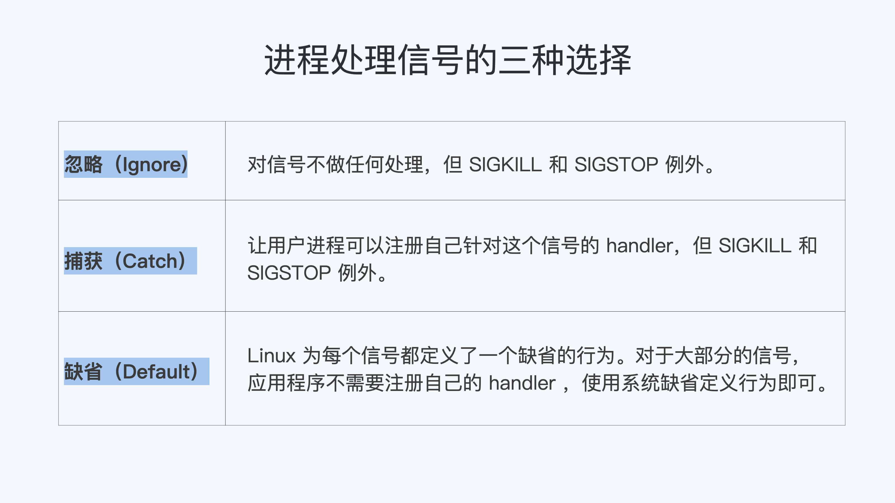
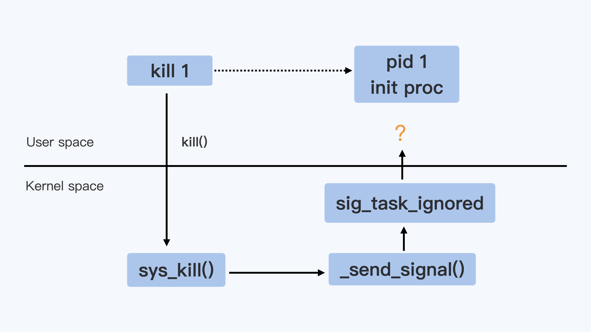
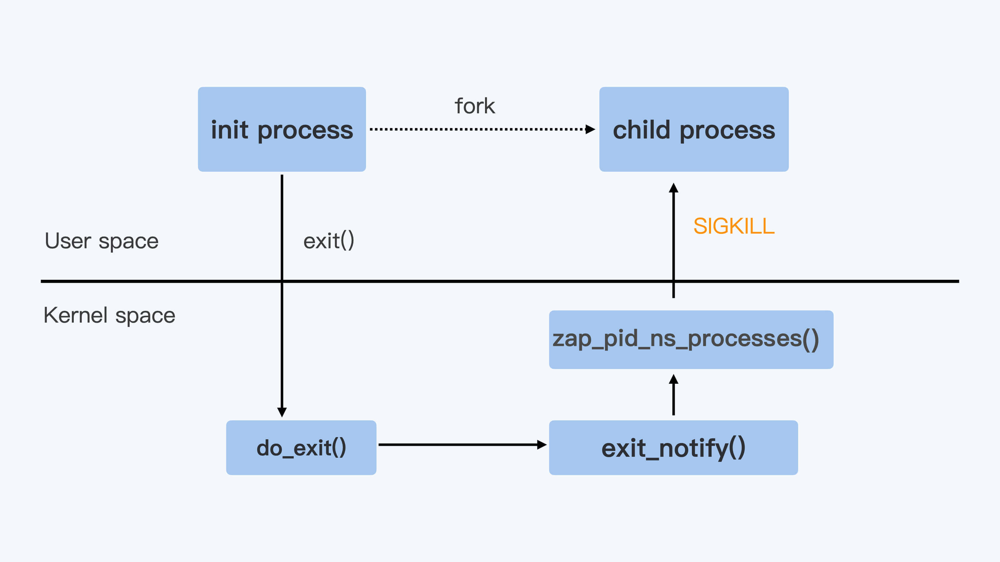

进程
为什么我在容器中不能kill 1号进程？
问题再现
接下来，我们一起再现用 kill 1 命令重启容器的问题。
我猜你肯定想问，为什么要在容器中执行 kill 1 或者 kill -9 1 的命令呢？
这位同学当时遇到的情况是这样的，他想修改容器镜像里的一个bug，但因为网路配置的问题，这个同学又不想为了重建pod去改变pod IP。
如果你用过Kubernetes的话，你也肯定知道，Kubernetes上是没有 restart pod 这个命令的。这样看来，他似乎只能让pod做个原地重启了。 当时我首先想到的，就是在容器中使用kill pid 1的方式重启容器。
为了模拟这个过程，我们可以进行下面的这段操作。
如果你没有在容器中做过 kill 1 ，你可以下载我在GitHub上的这个 例子，运行 make image 来做一个容器镜像。
然后，我们用Docker构建一个容器，用例子中的 init.sh脚本 作为这个容器的init进程。
最后，我们在容器中运行 kill 1 和 kill -9 1 ，看看会发生什么。
# docker stop sig-proc;docker rm sig-proc
# docker run --name sig-proc -d registry/sig-proc:v1 /init.sh
# docker exec -it sig-proc bash
[root@5cc69036b7b2 /]# ps -ef
UID PID PPID C STIME TTY TIME CMD
root 1 0 0 07:23 ? 00:00:00 /bin/bash /init.sh
root 8 1 0 07:25 ? 00:00:00 /usr/bin/coreutils --coreutils-prog-shebang=sleep /usr/bin/sleep 100
root 9 0 6 07:27 pts/0 00:00:00 bash
root 22 9 0 07:27 pts/0 00:00:00 ps -ef
[root@5cc69036b7b2 /]# kill 1
[root@5cc69036b7b2 /]# kill -9 1
[root@5cc69036b7b2 /]# ps -ef
UID PID PPID C STIME TTY TIME CMD
root 1 0 0 07:23 ? 00:00:00 /bin/bash /init.sh
root 9 0 0 07:27 pts/0 00:00:00 bash
root 23 1 0 07:27 ? 00:00:00 /usr/bin/coreutils --coreutils-prog-shebang=sleep /usr/bin/sleep 100
root 24 9 0 07:27 pts/0 00:00:00 ps -ef
当我们完成前面的操作，就会发现无论运行 kill 1 （对应Linux中的SIGTERM信号）还是 kill -9 1（对应Linux中的SIGKILL信号），都无法让进程终止。
那么问题来了，这两个常常用来终止进程的信号，都对容器中的init进程不起作用，这是怎么回事呢？
要解释这个问题，我们就要回到容器的两个最基本概念——init进程和Linux信号中寻找答案。
知识详解
如何理解init进程？
使用容器的理想境界是 一个容器只启动一个进程，但这在现实应用中有时是做不到的。
比如说，在一个容器中除了主进程之外，我们可能还会启动辅助进程，做监控或者rotate logs；再比如说，我们需要把原来运行在虚拟机（VM）的程序移到容器里，这些原来跑在虚拟机上的程序本身就是多进程的。
一旦我们启动了多个进程，那么容器里就会出现一个pid 1，也就是我们常说的1号进程或者init进程，然后 由这个进程创建出其他的子进程。
接下来，我带你梳理一下init进程是怎么来的。
一个Linux操作系统，在系统打开电源，执行BIOS/boot-loader之后，就会由boot-loader负责加载Linux内核。
Linux内核执行文件一般会放在/boot目录下，文件名类似vmlinuz*。在内核完成了操作系统的各种初始化之后， 这个程序需要执行的第一个用户态程就是init进程。
内核代码启动1号进程的时候，在没有外面参数指定程序路径的情况下，一般会从几个缺省路径尝试执行1号进程的代码。这几个路径都是Unix常用的可执行代码路径。
系统启动的时候先是执行内核态的代码，然后在内核中调用1号进程的代码，从内核态切换到用户态。
目前主流的Linux发行版，无论是RedHat系的还是Debian系的，都会把/sbin/init作为符号链接指向Systemd。Systemd是目前最流行的Linux init进程，在它之前还有SysVinit、UpStart等Linux init进程。
但无论是哪种Linux init进程，它最基本的功能都是创建出Linux系统中其他所有的进程，并且管理这些进程。 具体在kernel里的代码实现如下：
init/main.c
/*
* We try each of these until one succeeds.
*
* The Bourne shell can be used instead of init if we are
* trying to recover a really broken machine.
*/
if (execute_command) {
ret = run_init_process(execute_command);
if (!ret)
return 0;
panic("Requested init %s failed (error %d).",
execute_command, ret);
}
if (!try_to_run_init_process("/sbin/init") ||
!try_to_run_init_process("/etc/init") ||
!try_to_run_init_process("/bin/init") ||
!try_to_run_init_process("/bin/sh"))
return 0;
panic("No working init found. Try passing init= option to kernel. "
"See Linux Documentation/admin-guide/init.rst for guidance.");
$ ls -l /sbin/init
lrwxrwxrwx 1 root root 20 Feb 5 01:07 /sbin/init -> /lib/systemd/systemd
在Linux上有了容器的概念之后，一旦容器建立了自己的Pid Namespace（进程命名空间），这个Namespace里的进程号也是从1开始标记的。所以，容器的init进程也被称为1号进程。
怎么样，1号进程是不是不难理解？关于这个知识点，你只需要记住： 1号进程是第一个用户态的进程，由它直接或者间接创建了Namespace中的其他进程。
如何理解Linux信号？
刚才我给你讲了什么是1号进程，要想解决“为什么我在容器中不能kill 1号进程”这个问题，我们还得看看kill命令起到的作用。
我们运行kill命令，其实在Linux里就是发送一个信号，那么信号到底是什么呢？这就涉及到Linux信号的概念了。
其实信号这个概念在很早期的Unix系统上就有了。它一般会从1开始编号，通常来说，信号编号是1到31，这个编号在所有的Unix系统上都是一样的。
在Linux上我们可以用 kill -l 来看这些信号的编号和名字，具体的编号和名字我给你列在了下面，你可以看一看。
$ kill -l
1) SIGHUP 2) SIGINT 3) SIGQUIT 4) SIGILL 5) SIGTRAP
6) SIGABRT 7) SIGBUS 8) SIGFPE 9) SIGKILL 10) SIGUSR1
11) SIGSEGV 12) SIGUSR2 13) SIGPIPE 14) SIGALRM 15) SIGTERM
16) SIGSTKFLT 17) SIGCHLD 18) SIGCONT 19) SIGSTOP 20) SIGTSTP
21) SIGTTIN 22) SIGTTOU 23) SIGURG 24) SIGXCPU 25) SIGXFSZ
26) SIGVTALRM 27) SIGPROF 28) SIGWINCH 29) SIGIO 30) SIGPWR
31) SIGSYS
用一句话来概括， 信号（Signal）其实就是Linux进程收到的一个通知。 这些通知产生的源头有很多种，通知的类型也有很多种。
比如下面这几个典型的场景，你可以看一下：
- 如果我们按下键盘“Ctrl+C”，当前运行的进程就会收到一个信号SIGINT而退出；
- 如果我们的代码写得有问题，导致内存访问出错了，当前的进程就会收到另一个信号SIGSEGV；
- 我们也可以通过命令
kill <pid>，直接向一个进程发送一个信号，缺省情况下不指定信号的类型，那么这个信号就是SIGTERM。也可以指定信号类型，比如命令"kill -9 <pid>", 这里的9，就是编号为9的信号，SIGKILL信号。
在这一讲中，我们主要用到 SIGTERM（15）和SIGKILL（9）这两个信号，所以这里你主要了解这两个信号就可以了，其他信号以后用到时再做介绍。
进程在收到信号后，就会去做相应的处理。怎么处理呢？对于每一个信号，进程对它的处理都有下面三个选择。
第一个选择是 忽略（Ignore），就是对这个信号不做任何处理，但是有两个信号例外，对于SIGKILL和SIGSTOP这个两个信号，进程是不能忽略的。这是因为它们的主要作用是为Linux kernel和超级用户提供删除任意进程的特权。
第二个选择，就是 捕获（Catch），这个是指让用户进程可以注册自己针对这个信号的handler。具体怎么做我们目前暂时涉及不到，你先知道就行，我们在后面课程会进行详细介绍。
对于捕获，SIGKILL和SIGSTOP这两个信号也同样例外，这两个信号不能有用户自己的处理代码，只能执行系统的缺省行为。
还有一个选择是 缺省行为（Default），Linux为每个信号都定义了一个缺省的行为，你可以在Linux系统中运行 man 7 signal 来查看每个信号的缺省行为。
对于大部分的信号而言，应用程序不需要注册自己的handler，使用系统缺省定义行为就可以了。

刚才说了，SIGTERM（15）和SIGKILL（9）这两个信号是我们重点掌握的。现在我们已经讲解了信号的概念和处理方式，我就拿这两个信号为例，再带你具体分析一下。
首先我们来看SIGTERM（15），这个信号是Linux命令kill缺省发出的。前面例子里的命令 kill 1 ，就是通过kill向1号进程发送一个信号，在没有别的参数时，这个信号类型就默认为SIGTERM。
SIGTERM这个信号是可以被捕获的，这里的“捕获”指的就是用户进程可以为这个信号注册自己的handler，而这个handler，我们后面会看到，它可以处理进程的graceful-shutdown问题。
我们再来了解一下SIGKILL (9)，这个信号是Linux里两个 特权信号 之一。什么是特权信号呢？
前面我们已经提到过了， 特权信号就是Linux为kernel和超级用户去删除任意进程所保留的，不能被忽略也不能被捕获。 那么进程一旦收到SIGKILL，就要退出。
在前面的例子里，我们运行的命令 kill -9 1 里的参数“-9”，其实就是指发送编号为9的这个SIGKILL信号给1号进程。
现象解释
现在，你应该理解init进程和Linux信号这两个概念了，让我们回到开头的问题上来：“为什么我在容器中不能kill 1号进程，甚至SIGKILL信号也不行？”
你还记得么，在课程的最开始，我们已经尝试过用bash作为容器1号进程，这样是无法把1号进程杀掉的。那么我们再一起来看一看，用别的编程语言写的1号进程是否也杀不掉。
我们现在 用C程序作为init进程，尝试一下杀掉1号进程。和bash init进程一样，无论SIGTERM信号还是SIGKILL信号，在容器里都不能杀死这个1号进程。
# cat c-init-nosig.c
#include <stdio.h>
#include <unistd.h>
int main(int argc, char *argv[])
{
printf("Process is sleeping\\n");
while (1) {
sleep(100);
}
return 0;
}
# docker stop sig-proc;docker rm sig-proc
# docker run --name sig-proc -d registry/sig-proc:v1 /c-init-nosig
# docker exec -it sig-proc bash
[root@5d3d42a031b1 /]# ps -ef
UID PID PPID C STIME TTY TIME CMD
root 1 0 0 07:48 ? 00:00:00 /c-init-nosig
root 6 0 5 07:48 pts/0 00:00:00 bash
root 19 6 0 07:48 pts/0 00:00:00 ps -ef
[root@5d3d42a031b1 /]# kill 1
[root@5d3d42a031b1 /]# kill -9 1
[root@5d3d42a031b1 /]# ps -ef
UID PID PPID C STIME TTY TIME CMD
root 1 0 0 07:48 ? 00:00:00 /c-init-nosig
root 6 0 0 07:48 pts/0 00:00:00 bash
root 20 6 0 07:49 pts/0 00:00:00 ps -ef
我们是不是这样就可以得出结论——“容器里的1号进程，完全忽略了SIGTERM和SIGKILL信号了”呢？你先别着急，我们再拿其他语言试试。
接下来，我们用 Golang程序作为1号进程，我们再在容器中执行 kill -9 1 和 kill 1 。
这次，我们发现 kill -9 1 这个命令仍然不能杀死1号进程，也就是说，SIGKILL信号和之前的两个测试一样不起作用。
但是，我们执行 kill 1 以后，SIGTERM这个信号把init进程给杀了，容器退出了。
# cat go-init.go
package main
import (
"fmt"
"time"
)
func main() {
fmt.Println("Start app\\n")
time.Sleep(time.Duration(100000) * time.Millisecond)
}
# docker stop sig-proc;docker rm sig-proc
# docker run --name sig-proc -d registry/sig-proc:v1 /go-init
# docker exec -it sig-proc bash
[root@234a23aa597b /]# ps -ef
UID PID PPID C STIME TTY TIME CMD
root 1 0 1 08:04 ? 00:00:00 /go-init
root 10 0 9 08:04 pts/0 00:00:00 bash
root 23 10 0 08:04 pts/0 00:00:00 ps -ef
[root@234a23aa597b /]# kill -9 1
[root@234a23aa597b /]# kill 1
[root@234a23aa597b /]# [~]# docker ps
CONTAINER ID IMAGE COMMAND CREATED STATUS PORTS NAMES
对于这个测试结果，你是不是反而觉得更加困惑了？
为什么使用不同程序，结果就不一样呢？接下来我们就看看kill命令下达之后，Linux里究竟发生了什么事，我给你系统地梳理一下整个过程。
在我们运行 kill 1 这个命令的时候，希望把SIGTERM这个信号发送给1号进程，就像下面图里的 带箭头虚线。
在Linux实现里，kill命令调用了 kill()的这个系统调用（所谓系统调用就是内核的调用接口）而进入到了内核函数sys_kill()， 也就是下图里的 实线箭头。
而内核在决定把信号发送给1号进程的时候，会调用sig_task_ignored()这个函数来做个判断，这个判断有什么用呢？
它会决定内核在哪些情况下会把发送的这个信号给忽略掉。如果信号被忽略了，那么init进程就不能收到指令了。
所以，我们想要知道init进程为什么收到或者收不到信号，都要去看看 sig_task_ignored()的这个内核函数的实现。

在sig_task_ignored()这个函数中有三个if{}判断，第一个和第三个if{}判断和我们的问题没有关系，并且代码有注释，我们就不讨论了。
我们重点来看第二个if{}。我来给你分析一下，在容器中执行 kill 1 或者 kill -9 1 的时候，这第二个if{}里的三个子条件是否可以被满足呢？
我们来看下面这串代码，这里表示 一旦这三个子条件都被满足，那么这个信号就不会发送给进程。
kernel/signal.c
static bool sig_task_ignored(struct task_struct *t, int sig, bool force)
{
void __user *handler;
handler = sig_handler(t, sig);
/* SIGKILL and SIGSTOP may not be sent to the global init */
if (unlikely(is_global_init(t) && sig_kernel_only(sig)))
return true;
if (unlikely(t->signal->flags & SIGNAL_UNKILLABLE) &&
handler == SIG_DFL && !(force && sig_kernel_only(sig)))
return true;
/* Only allow kernel generated signals to this kthread */
if (unlikely((t->flags & PF_KTHREAD) &&
(handler == SIG_KTHREAD_KERNEL) && !force))
return true;
return sig_handler_ignored(handler, sig);
}
接下来，我们就逐一分析一下这三个子条件，我们来说说这个"!(force && sig_kernel_only(sig))" 。
第一个条件里force的值，对于同一个Namespace里发出的信号来说，调用值是0，所以这个条件总是满足的。
我们再来看一下第二个条件 “handler == SIG_DFL”，第二个条件判断信号的handler是否是SIG_DFL。
那么什么是SIG_DFL呢？ 对于每个信号，用户进程如果不注册一个自己的handler，就会有一个系统缺省的handler，这个缺省的handler就叫作SIG_DFL。
对于SIGKILL，我们前面介绍过它是特权信号，是不允许被捕获的，所以它的handler就一直是SIG_DFL。这第二个条件对SIGKILL来说总是满足的。
对于SIGTERM，它是可以被捕获的。也就是说如果用户不注册handler，那么这个条件对SIGTERM也是满足的。
最后再来看一下第三个条件，"t->signal->flags & SIGNAL_UNKILLABLE"，这里的条件判断是这样的，进程必须是SIGNAL_UNKILLABLE的。
这个SIGNAL_UNKILLABLE flag是在哪里置位的呢？
可以参考我们下面的这段代码，在每个Namespace的init进程建立的时候，就会打上 SIGNAL_UNKILLABLE 这个标签，也就是说只要是1号进程，就会有这个flag，这个条件也是满足的。
kernel/fork.c
if (is_child_reaper(pid)) {
ns_of_pid(pid)->child_reaper = p;
p->signal->flags |= SIGNAL_UNKILLABLE;
}
/*
* is_child_reaper returns true if the pid is the init process
* of the current namespace. As this one could be checked before
* pid_ns->child_reaper is assigned in copy_process, we check
* with the pid number.
*/
static inline bool is_child_reaper(struct pid *pid)
{
return pid->numbers[pid->level].nr == 1;
}
我们可以看出来，其实 最关键的一点就是handler == SIG_DFL。Linux内核针对每个Nnamespace里的init进程，把只有default handler的信号都给忽略了。
如果我们自己注册了信号的handler（应用程序注册信号handler被称作"Catch the Signal"），那么这个信号handler就不再是SIG_DFL 。即使是init进程在接收到SIGTERM之后也是可以退出的。
不过，由于SIGKILL是一个特例，因为SIGKILL是不允许被注册用户handler的（还有一个不允许注册用户handler的信号是SIGSTOP），那么它只有SIG_DFL handler。
所以init进程是永远不能被SIGKILL所杀，但是可以被SIGTERM杀死。
说到这里，我们该怎么证实这一点呢？我们可以做下面两件事来验证。
第一件事，你可以查看1号进程状态中SigCgt Bitmap。
我们可以看到，在Golang程序里，很多信号都注册了自己的handler，当然也包括了SIGTERM(15)，也就是bit 15。
而C程序里，缺省状态下，一个信号handler都没有注册；bash程序里注册了两个handler，bit 2和bit 17，也就是SIGINT和SIGCHLD，但是没有注册SIGTERM。
所以，C程序和bash程序里SIGTERM的handler是SIG_DFL（系统缺省行为），那么它们就不能被SIGTERM所杀。
具体我们可以看一下这段/proc系统的进程状态：
### golang init
# cat /proc/1/status | grep -i SigCgt
SigCgt: fffffffe7fc1feff
### C init
# cat /proc/1/status | grep -i SigCgt
SigCgt: 0000000000000000
### bash init
# cat /proc/1/status | grep -i SigCgt
SigCgt: 0000000000010002
第二件事，给C程序注册一下SIGTERM handler，捕获SIGTERM。
我们调用signal()系统调用注册SIGTERM的handler，在handler里主动退出，再看看容器中 kill 1 的结果。
这次我们就可以看到， 在进程状态的SigCgt bitmap里，bit 15 (SIGTERM)已经置位了。同时，运行 kill 1 也可以把这个C程序的init进程给杀死了。
#include <stdio.h>
#include <stdlib.h>
#include <sys/types.h>
#include <sys/wait.h>
#include <unistd.h>
void sig_handler(int signo)
{
if (signo == SIGTERM) {
printf("received SIGTERM\\n");
exit(0);
}
}
int main(int argc, char *argv[])
{
signal(SIGTERM, sig_handler);
printf("Process is sleeping\\n");
while (1) {
sleep(100);
}
return 0;
}
# docker stop sig-proc;docker rm sig-proc
# docker run --name sig-proc -d registry/sig-proc:v1 /c-init-sig
# docker exec -it sig-proc bash
[root@043f4f717cb5 /]# ps -ef
UID PID PPID C STIME TTY TIME CMD
root 1 0 0 09:05 ? 00:00:00 /c-init-sig
root 6 0 18 09:06 pts/0 00:00:00 bash
root 19 6 0 09:06 pts/0 00:00:00 ps -ef
[root@043f4f717cb5 /]# cat /proc/1/status | grep SigCgt
SigCgt: 0000000000004000
[root@043f4f717cb5 /]# kill 1
# docker ps
CONTAINER ID IMAGE COMMAND CREATED STATUS PORTS NAMES
好了，到这里我们可以确定这两点：
kill -9 1在容器中是不工作的，内核阻止了1号进程对SIGKILL特权信号的响应。kill 1分两种情况，如果1号进程没有注册SIGTERM的handler，那么对SIGTERM信号也不响应，如果注册了handler，那么就可以响应SIGTERM信号。
总结
- 在容器中，1号进程永远不会响应SIGKILL和SIGSTOP这两个特权信号；
- 对于其他的信号，如果用户自己注册了handler，1号进程可以响应。
为什么我的容器里有这么多僵尸进程？
说起僵尸进程，相信你并不陌生。很多面试官经常会问到这个知识点，用来考察候选人的操作系统背景。通过这个问题，可以了解候选人对Linux进程管理和信号处理这些基础知识的理解程度，他的基本功扎不扎实。
所以，今天我们就一起来看看容器里为什么会产生僵尸进程，然后去分析如何怎么解决。
问题再现
我们平时用容器的时候，有的同学会发现，自己的容器运行久了之后，运行ps命令会看到一些进程，进程名后面加了<defunct>标识。那么你自然会有这样的疑问，这些是什么进程呢？
你可以自己做个容器镜像来模拟一下，我们先下载这个 例子，运行 make image 之后，再启动容器。
在容器里我们可以看到，1号进程fork出1000个子进程。当这些子进程运行结束后，它们的进程名字后面都加了标识。
从它们的Z stat（进程状态）中我们可以知道，这些都是僵尸进程（Zombie Process）。运行top命令，我们也可以看到输出的内容显示有 1000 zombie 进程。
# docker run --name zombie-proc -d registry/zombie-proc:v1
02dec161a9e8b18922bd3599b922dbd087a2ad60c9b34afccde7c91a463bde8a
# docker exec -it zombie-proc bash
# ps aux
USER PID %CPU %MEM VSZ RSS TTY STAT START TIME COMMAND
root 1 0.0 0.0 4324 1436 ? Ss 01:23 0:00 /app-test 1000
root 6 0.0 0.0 0 0 ? Z 01:23 0:00 [app-test] <defunct>
root 7 0.0 0.0 0 0 ? Z 01:23 0:00 [app-test] <defunct>
root 8 0.0 0.0 0 0 ? Z 01:23 0:00 [app-test] <defunct>
root 9 0.0 0.0 0 0 ? Z 01:23 0:00 [app-test] <defunct>
root 10 0.0 0.0 0 0 ? Z 01:23 0:00 [app-test] <defunct>
…
root 999 0.0 0.0 0 0 ? Z 01:23 0:00 [app-test] <defunct>
root 1000 0.0 0.0 0 0 ? Z 01:23 0:00 [app-test] <defunct>
root 1001 0.0 0.0 0 0 ? Z 01:23 0:00 [app-test] <defunct>
root 1002 0.0 0.0 0 0 ? Z 01:23 0:00 [app-test] <defunct>
root 1003 0.0 0.0 0 0 ? Z 01:23 0:00 [app-test] <defunct>
root 1004 0.0 0.0 0 0 ? Z 01:23 0:00 [app-test] <defunct>
root 1005 0.0 0.0 0 0 ? Z 01:23 0:00 [app-test] <defunct>
root 1023 0.0 0.0 12020 3392 pts/0 Ss 01:39 0:00 bash
# top
top - 02:18:57 up 31 days, 15:17, 0 users, load average: 0.00, 0.01, 0.00
Tasks: 1003 total, 1 running, 2 sleeping, 0 stopped, 1000 zombie
…
那么问题来了，什么是僵尸进程？它们是怎么产生的？僵尸进程太多会导致什么问题？想要回答这些问题，我们就要从进程状态的源头学习，看看僵尸进程到底处于进程整个生命周期里的哪一环。
知识详解
Linux的进程状态
无论进程还是线程，在Linux内核里其实都是用 task_struct{}这个结构 来表示的。它其实就是任务（task），也就是Linux里基本的调度单位。为了方便讲解，我们在这里暂且称它为进程。
那一个进程从创建（fork）到退出（exit），这个过程中的状态转化还是很简单的。
下面这个图是 《Linux Kernel Development》这本书里的Linux进程状态转化图。
我们从这张图中可以看出来，在进程“活着”的时候就只有两个状态：运行态（TASK_RUNNING）和睡眠态（TASK_INTERRUPTIBLE，TASK_UNINTERRUPTIBLE）。
📎 附件未包含：原文此处引用了一张图片（
Pasted image 20250105173531.png，《Linux Kernel Development》一书中的 Linux 进程状态转化图），导出稿未包含该附件。
那运行态和睡眠态这两种状态分别是什么意思呢？
运行态的意思是，无论进程是正在运行中（也就是获得了CPU资源），还是进程在run queue队列里随时可以运行，都处于这个状态。
我们想要查看进程是不是处于运行态，其实也很简单，比如使用ps命令，可以看到处于这个状态的进程显示的是R stat。
睡眠态是指，进程需要等待某个资源而进入的状态，要等待的资源可以是一个信号量（Semaphore）, 或者是磁盘I/O，这个状态的进程会被放入到wait queue队列里。
这个睡眠态具体还包括两个子状态：一个是可以被打断的（TASK_INTERRUPTIBLE），我们用ps查看到的进程，显示为S stat。还有一个是不可被打断的（TASK_UNINTERRUPTIBLE），用ps查看进程，就显示为D stat。
这两个子状态，我们在后面的课程里碰到新的问题时，会再做详细介绍，这里你只要知道这些就行了。
除了上面进程在活的时候的两个状态，进程在调用do_exit()退出的时候，还有两个状态。
一个是 EXIT_DEAD，也就是进程在真正结束退出的那一瞬间的状态；第二个是 EXIT_ZOMBIE状态，这是进程在EXIT_DEAD前的一个状态，而我们今天讨论的僵尸进程，也就是处于这个状态中。
限制容器中进程数目
理解了Linux进程状态之后，我们还需要知道，在Linux系统中怎么限制进程数目。因为弄清楚这个问题，我们才能更深入地去理解僵尸进程的危害。
一台Linux机器上的进程总数目是有限制的。如果超过这个最大值，那么系统就无法创建出新的进程了，比如你想SSH登录到这台机器上就不行了。
这个最大值可以我们在 /proc/sys/kernel/pid_max这个参数中看到。
Linux内核在初始化系统的时候，会根据机器CPU的数目来设置pid_max的值。
比如说，如果机器中CPU数目小于等于32，那么pid_max就会被设置为32768（32K）；如果机器中的CPU数目大于32，那么pid_max就被设置为 N*1024 （N就是CPU数目）。
对于Linux系统而言，容器就是一组进程的集合。如果容器中的应用创建过多的进程或者出现bug，就会产生类似fork bomb的行为。
这个fork bomb就是指在计算机中，通过不断建立新进程来消耗系统中的进程资源，它是一种黑客攻击方式。这样，容器中的进程数就会把整个节点的可用进程总数给消耗完。
这样，不但会使同一个节点上的其他容器无法工作，还会让宿主机本身也无法工作。所以对于每个容器来说，我们都需要限制它的最大进程数目，而这个功能由pids Cgroup这个子系统来完成。
而这个功能的实现方法是这样的：pids Cgroup通过Cgroup文件系统的方式向用户提供操作接口，一般它的Cgroup文件系统挂载点在 /sys/fs/cgroup/pids。
在一个容器建立之后，创建容器的服务会在/sys/fs/cgroup/pids下建立一个子目录，就是一个控制组，控制组里 最关键的一个文件就是pids.max。我们可以向这个文件写入数值，而这个值就是这个容器中允许的最大进程数目。
我们对这个值做好限制，容器就不会因为创建出过多进程而影响到其他容器和宿主机了。思路讲完了，接下来我们就实际上手试一试。
下面是对一个Docker容器的pids Cgroup的操作，你可以跟着操作一下。
# pwd
/sys/fs/cgroup/pids
# df ./
Filesystem 1K-blocks Used Available Use% Mounted on
cgroup 0 0 0 - /sys/fs/cgroup/pids
# docker ps
CONTAINER ID IMAGE COMMAND CREATED STATUS PORTS NAMES
7ecd3aa7fdc1 registry/zombie-proc:v1 "/app-test 1000" 37 hours ago Up 37 hours frosty_yalow
# pwd
/sys/fs/cgroup/pids/system.slice/docker-7ecd3aa7fdc15a1e183813b1899d5d939beafb11833ad6c8b0432536e5b9871c.scope
# ls
cgroup.clone_children cgroup.procs notify_on_release pids.current pids.events pids.max tasks
# echo 1002 > pids.max
# cat pids.max
1002
解决问题
刚才我给你解释了两个基本概念，进程状态和进程数目限制，那我们现在就可以解决容器中的僵尸进程问题了。
在前面Linux进程状态的介绍里，我们知道了，僵尸进程是Linux进程退出状态的一种。
从内核进程的do_exit()函数我们也可以看到，这时候进程task_struct里的mm/shm/sem/files等文件资源都已经释放了，只留下了一个stask_struct instance空壳。
就像下面这段代码显示的一样，从进程对应的 /proc/<pid> 文件目录下，我们也可以看出来，对应的资源都已经没有了。
# cat /proc/6/cmdline
# cat /proc/6/smaps
# cat /proc/6/maps
# ls /proc/6/fd
并且，这个进程也已经不响应任何的信号了，无论SIGTERM(15)还是SIGKILL(9)。例如上面pid 6的僵尸进程，这两个信号都已经被响应了。
# kill -15 6
# kill -9 6
# ps -ef | grep 6
root 6 1 0 13:59 ? 00:00:00 [app-test] <defunct>
当多个容器运行在同一个宿主机上的时候，为了避免一个容器消耗完我们整个宿主机进程号资源，我们会配置pids Cgroup来限制每个容器的最大进程数目。也就是说，进程数目在每个容器中也是有限的，是一种很宝贵的资源。
既然进程号资源在宿主机上是有限的，显然残留的僵尸进程多了以后，给系统带来最大问题就是它占用了进程号。 这就意味着，残留的僵尸进程，在容器里仍然占据着进程号资源，很有可能会导致新的进程不能运转。
这里我再次借用开头的那个例子，也就是一个产生了1000个僵尸进程的容器，带你理解一下这个例子中进程数的上限。我们可以看一下，1个init进程+1000个僵尸进程+1个bash进程 ，总共就是1002个进程。
如果pids Cgroup也限制了这个容器的最大进程号的数量，限制为1002的话，我们在pids Cgroup里可以看到，pids.current == pids.max，也就是已经达到了容器进程号数的上限。
这时候，如果我们在容器里想再启动一个进程，例如运行一下ls命令，就会看到 Resource temporarily unavailable 的错误消息。已经退出的无用进程，却阻碍了有用进程的启动，显然这样是不合理的。
具体代码如下：
### On host
# docker ps
CONTAINER ID IMAGE COMMAND CREATED STATUS PORTS NAMES
09e6e8e16346 registry/zombie-proc:v1 "/app-test 1000" 29 minutes ago Up 29 minutes peaceful_ritchie
# pwd
/sys/fs/cgroup/pids/system.slice/docker-09e6e8e1634612580a03dd3496d2efed2cf2a510b9688160b414ce1d1ea3e4ae.scope
# cat pids.max
1002
# cat pids.current
1002
### On Container
[root@09e6e8e16346 /]# ls
bash: fork: retry: Resource temporarily unavailable
bash: fork: retry: Resource temporarily unavailable
所以，接下来我们还要看看这些僵尸进程到底是怎么产生的。因为只有理解它的产生机制，我们才能想明白怎么避免僵尸进程的出现。
我们先看一下刚才模拟僵尸进程的那段小程序。这段程序里， 父进程在创建完子进程之后就不管了，这就是造成子进程变成僵尸进程的原因。
#include <stdio.h>
#include <stdlib.h>
#include <sys/types.h>
#include <sys/wait.h>
#include <unistd.h>
int main(int argc, char *argv[])
{
int i;
int total;
if (argc < 2) {
total = 1;
} else {
total = atoi(argv[1]);
}
printf("To create %d processes\\n", total);
for (i = 0; i < total; i++) {
pid_t pid = fork();
if (pid == 0) {
printf("Child => PPID: %d PID: %d\\n", getppid(),
getpid());
sleep(60);
printf("Child process exits\\n");
exit(EXIT_SUCCESS);
} else if (pid > 0) {
printf("Parent created child %d\\n", i);
} else {
printf("Unable to create child process. %d\\n", i);
break;
}
}
printf("Paraent is sleeping\\n");
while (1) {
sleep(100);
}
return EXIT_SUCCESS;
}
前面我们通过分析，发现子进程变成僵尸进程的原因在于父进程“不负责”，那找到原因后，我们再想想，如何来解决。
其实解决思路很好理解，就好像熊孩子犯了事儿，你要去找他家长来管教，那子进程在容器里“赖着不走”，我们就需要让父进程出面处理了。
所以，在Linux中的进程退出之后，如果进入僵尸状态，我们就需要父进程调用wait()这个系统调用，去回收僵尸进程的最后的那些系统资源，比如进程号资源。
那么，我们在刚才那段代码里，主进程进入sleep(100)之前，加上一段wait()函数调用，就不会出现僵尸进程的残留了。
for (i = 0; i < total; i++) {
int status;
wait(&status);
}
而容器中所有进程的最终父进程，就是我们所说的init进程，由它负责生成容器中的所有其他进程。因此，容器的init进程有责任回收容器中的所有僵尸进程。
前面我们知道了wait()系统调用可以回收僵尸进程，但是wait()系统调用有一个问题，需要你注意。
wait()系统调用是一个阻塞的调用，也就是说，如果没有子进程是僵尸进程的话，这个调用就一直不会返回，那么整个进程就会被阻塞住，而不能去做别的事了。
不过这也没有关系，我们还有另一个方法处理。Linux还提供了一个类似的系统调用waitpid()，这个调用的参数更多。
其中就有一个参数WNOHANG，它的含义就是，如果在调用的时候没有僵尸进程，那么函数就马上返回了，而不会像wait()调用那样一直等待在那里。
比如社区的一个 容器init项目tini。在这个例子中，它的主进程里，就是不断在调用带WNOHANG参数的waitpid()，通过这个方式清理容器中所有的僵尸进程。
int reap_zombies(const pid_t child_pid, int* const child_exitcode_ptr) {
pid_t current_pid;
int current_status;
while (1) {
current_pid = waitpid(-1, ¤t_status, WNOHANG);
switch (current_pid) {
case -1:
if (errno == ECHILD) {
PRINT_TRACE("No child to wait");
break;
}
…
为什么我在容器中的进程被强制杀死了？
我先给你说说，为什么进程管理中做到这点很重要。在实际生产环境中，我们有不少应用在退出的时候需要做一些清理工作，比如清理一些远端的链接，或者是清除一些本地的临时数据。
这样的清理工作，可以尽可能避免远端或者本地的错误发生，比如减少丢包等问题的出现。而这些退出清理的工作，通常是在SIGTERM这个信号用户注册的handler里进行的。
但是，如果我们的进程收到了SIGKILL，那应用程序就没机会执行这些清理工作了。这就意味着，一旦进程不能graceful shutdown，就会增加应用的出错率。
所以接下来，我们来重现一下，进程在容器退出时都发生了什么。
场景再现
在容器平台上，你想要停止一个容器，无论是在Kubernetes中去删除一个pod，或者用Docker停止一个容器，最后都会用到Containerd这个服务。
而Containerd在停止容器的时候，就会向容器的init进程发送一个SIGTERM信号。
我们会发现，在init进程退出之后，容器内的其他进程也都立刻退出了。不过不同的是，init进程收到的是SIGTERM信号，而其他进程收到的是SIGKILL信号。
在理解进程的 第一讲 中，我们提到过SIGKILL信号是不能被捕获的（catch）的，也就是用户不能注册自己的handler，而SIGTERM信号却允许用户注册自己的handler，这样的话差别就很大了。
那么，我们就一起来看看当容器退出的时候，如何才能让容器中的进程都收到SIGTERM信号，而不是SIGKILL信号。
延续前面课程中处理问题的思路，我们同样可以运行一个简单的容器，来重现这个问题，用这里的 代码 执行一下 make image ，然后用Docker启动这个容器镜像。
docker run -d --name fwd_sig registry/fwd_sig:v1 /c-init-sig
你会发现，在我们用 docker stop 停止这个容器的时候，如果用strace工具来监控，就能看到容器里的init进程和另外一个进程收到的信号情况。
在下面的例子里，进程号为15909的就是容器里的init进程，而进程号为15959的是容器里另外一个进程。
在命令输出中我们可以看到， init进程（15909）收到的是SIGTERM信号，而另外一个进程（15959）收到的果然是SIGKILL信号。
# ps -ef | grep c-init-sig
root 15857 14391 0 06:23 pts/0 00:00:00 docker run -it registry/fwd_sig:v1 /c-init-sig
root 15909 15879 0 06:23 pts/0 00:00:00 /c-init-sig
root 15959 15909 0 06:23 pts/0 00:00:00 /c-init-sig
root 16046 14607 0 06:23 pts/3 00:00:00 grep --color=auto c-init-sig
# strace -p 15909
strace: Process 15909 attached
restart_syscall(<... resuming interrupted read ...>) = ? ERESTART_RESTARTBLOCK (Interrupted by signal)
--- SIGTERM {si_signo=SIGTERM, si_code=SI_USER, si_pid=0, si_uid=0} ---
write(1, "received SIGTERM\\n", 17) = 17
exit_group(0) = ?
+++ exited with 0 +++
# strace -p 15959
strace: Process 15959 attached
restart_syscall(<... resuming interrupted read ...>) = ?
+++ killed by SIGKILL +++
知识详解：信号的两个系统调用
我们想要理解刚才的例子，就需要搞懂信号背后的两个系统调用，它们分别是kill()系统调用和signal()系统调用。
这里呢，我们可以结合前面讲过的信号来理解这两个系统调用。在容器init进程的第一讲里，我们介绍过信号的基本概念了， 信号就是Linux进程收到的一个通知。
等你学完如何使用这两个系统调用之后，就会更清楚Linux信号是怎么一回事，遇到容器里信号相关的问题，你就能更好地理清思路了。
我还会再给你举个使用函数的例子，帮助你进一步理解进程是如何实现graceful shutdown的。
进程对信号的处理其实就包括两个问题， 一个是进程如何发送信号，另一个是进程收到信号后如何处理。
我们在Linux中发送信号的系统调用是kill()，之前很多例子里面我们用的命令 kill ，它内部的实现就是调用了kill()这个函数。
下面是Linux Programmer’s Manual里对kill()函数的定义。
这个函数有两个参数，一个是 sig，代表需要发送哪个信号，比如sig的值是15的话，就是指发送SIGTERM；另一个参数是 pid，也就是指信号需要发送给哪个进程，比如值是1的话，就是指发送给进程号是1的进程。
NAME
kill - send signal to a process
SYNOPSIS
#include <sys/types.h>
#include <signal.h>
int kill(pid_t pid, int sig);
我们知道了发送信号的系统调用之后，再来看另一个系统调用，也就是signal()系统调用这个函数，它可以给信号注册handler。
下面是signal()在Linux Programmer’s Manual里的定义，参数 signum 也就是信号的编号，例如数值15，就是信号SIGTERM；参数 handler 是一个函数指针参数，用来注册用户的信号handler。
NAME
signal - ANSI C signal handling
SYNOPSIS
#include <signal.h>
typedef void (*sighandler_t)(int);
sighandler_t signal(int signum, sighandler_t handler);
在容器init进程的第一讲里， 我们学过进程对每种信号的处理，包括三个选择：调用系统缺省行为、捕获、忽略。 而这里的选择，其实就是程序中如何去调用signal()这个系统调用。
第一个选择就是缺省，如果我们在代码中对某个信号，比如SIGTERM信号，不做任何signal()相关的系统调用，那么在进程运行的时候，如果接收到信号SIGTERM，进程就会执行内核中SIGTERM信号的缺省代码。
对于SIGTERM这个信号来说，它的缺省行为就是进程退出（terminate）。
内核中对不同的信号有不同的缺省行为，一般会采用退出（terminate），暂停（stop），忽略（ignore）这三种行为中的一种。
那第二个选择捕获又是什么意思呢?
捕获指的就是我们在代码中为某个信号，调用signal()注册自己的handler。这样进程在运行的时候，一旦接收到信号，就不会再去执行内核中的缺省代码，而是会执行通过signal()注册的handler。
比如下面这段代码，我们为SIGTERM这个信号注册了一个handler，在handler里只是做了一个打印操作。
那么这个程序在运行的时候，如果收到SIGTERM信号，它就不会退出了，而是只在屏幕上显示出"received SIGTERM"。
void sig_handler(int signo)
{
if (signo == SIGTERM) {
printf("received SIGTERM\\n");
}
}
int main(int argc, char *argv[])
{
...
signal(SIGTERM, sig_handler);
...
}
我们再来看看第三个选择，如果要让进程“忽略”一个信号，我们就要通过signal()这个系统调用，为这个信号注册一个特殊的handler，也就是 SIG_IGN 。
比如下面的这段代码，就是为SIGTERM这个信号注册 SIG_IGN。
这样操作的效果，就是在程序运行的时候，如果收到SIGTERM信号，程序既不会退出，也不会在屏幕上输出log，而是什么反应也没有，就像完全没有收到这个信号一样。
int main(int argc, char *argv[])
{
...
signal(SIGTERM, SIG_IGN);
...
}
好了，我们通过讲解signal()这个系统调用，帮助你回顾了信号处理的三个选择：缺省行为、捕获和忽略。
这里我还想要提醒你一点， SIGKILL和SIGSTOP信号是两个特权信号，它们不可以被捕获和忽略，这个特点也反映在signal()调用上。
我们可以运行下面的 这段代码，如果我们用signal()为SIGKILL注册handler，那么它就会返回SIG_ERR，不允许我们做捕获操作。
# cat reg_sigkill.c
#include <stdio.h>
#include <stdlib.h>
#include <unistd.h>
#include <errno.h>
#include <signal.h>
typedef void (*sighandler_t)(int);
void sig_handler(int signo)
{
if (signo == SIGKILL) {
printf("received SIGKILL\\n");
exit(0);
}
}
int main(int argc, char *argv[])
{
sighandler_t h_ret;
h_ret = signal(SIGKILL, sig_handler);
if (h_ret == SIG_ERR) {
perror("SIG_ERR");
}
return 0;
}
# ./reg_sigkill
SIG_ERR: Invalid argument
最后，我用下面 这段代码 来做个小结。
这段代码里，我们用signal()对SIGTERM这个信号做了忽略，捕获以及恢复它的缺省行为，并且每一次都用kill()系统调用向进程自己发送SIGTERM信号，这样做可以确认进程对SIGTERM信号的选择。
#include <stdio.h>
#include <signal.h>
typedef void (*sighandler_t)(int);
void sig_handler(int signo)
{
if (signo == SIGTERM) {
printf("received SIGTERM\\n\\n");
// Set SIGTERM handler to default
signal(SIGTERM, SIG_DFL);
}
}
int main(int argc, char *argv[])
{
//Ignore SIGTERM, and send SIGTERM
// to process itself.
signal(SIGTERM, SIG_IGN);
printf("Ignore SIGTERM\\n\\n");
kill(0, SIGTERM);
//Catch SIGERM, and send SIGTERM
// to process itself.
signal(SIGTERM, sig_handler);
printf("Catch SIGTERM\\n");
kill(0, SIGTERM);
//Default SIGTERM. In sig_handler, it sets
//SIGTERM handler back to default one.
printf("Default SIGTERM\\n");
kill(0, SIGTERM);
return 0;
}
我们一起来总结一下刚才讲的两个系统调用：
先说说kill()这个系统调用，它其实很简单，输入两个参数：进程号和信号，就把特定的信号发送给指定的进程了。
再说说signal()这个调用，它决定了进程收到特定的信号如何来处理，SIG_DFL参数把对应信号恢复为缺省handler，也可以用自定义的函数作为handler，或者用SIG_IGN参数让进程忽略信号。
对于SIGKILL信号，如果调用signal()函数，为它注册自定义的handler，系统就会拒绝。
解决问题
我们在学习了kill()和signal()这个两个信号相关的系统调用之后，再回到这一讲最初的问题上，为什么在停止一个容器的时候，容器init进程收到的SIGTERM信号，而容器中其他进程却会收到SIGKILL信号呢？
当Linux进程收到SIGTERM信号并且使进程退出，这时Linux内核对处理进程退出的入口点就是do_exit()函数，do_exit()函数中会释放进程的相关资源，比如内存，文件句柄，信号量等等。
Linux内核对处理进程退出的入口点就是do_exit()函数，do_exit()函数中会释放进程的相关资源，比如内存，文件句柄，信号量等等。
在做完这些工作之后，它会调用一个exit_notify()函数，用来通知和这个进程相关的父子进程等。
对于容器来说，还要考虑Pid Namespace里的其他进程。这里调用的就是 zap_pid_ns_processes()这个函数，而在这个函数中，如果是处于退出状态的init进程，它会向Namespace中的其他进程都发送一个SIGKILL信号。
整个流程如下图所示。

你还可以看一下，内核代码是这样的。
/*
* The last thread in the cgroup-init thread group is terminating.
* Find remaining pid_ts in the namespace, signal and wait for them
* to exit.
*
* Note: This signals each threads in the namespace - even those that
* belong to the same thread group, To avoid this, we would have
* to walk the entire tasklist looking a processes in this
* namespace, but that could be unnecessarily expensive if the
* pid namespace has just a few processes. Or we need to
* maintain a tasklist for each pid namespace.
*
*/
rcu_read_lock();
read_lock(&tasklist_lock);
nr = 2;
idr_for_each_entry_continue(&pid_ns->idr, pid, nr) {
task = pid_task(pid, PIDTYPE_PID);
if (task && !__fatal_signal_pending(task))
group_send_sig_info(SIGKILL, SEND_SIG_PRIV, task, PIDTYPE_MAX);
}
说到这里，我们也就明白为什么容器init进程收到的SIGTERM信号，而容器中其他进程却会收到SIGKILL信号了。
前面我讲过，SIGKILL是个特权信号（特权信号是Linux为kernel和超级用户去删除任意进程所保留的，不能被忽略也不能被捕获）。
所以进程收到这个信号后，就立刻退出了，没有机会调用一些释放资源的handler之后，再做退出动作。
而SIGTERM是可以被捕获的，用户是可以注册自己的handler的。因此，容器中的程序在stop container的时候，我们更希望进程收到SIGTERM信号而不是SIGKILL信号。
那在容器被停止的时候，我们该怎么做，才能让容器中的进程收到SIGTERM信号呢？
你可能已经想到了，就是让容器init进程来转发SIGTERM信号。的确是这样，比如Docker Container里使用的tini作为init进程，tini的代码中就会调用sigtimedwait()这个函数来查看自己收到的信号，然后调用kill() 把信号发给子进程。
我给你举个具体的例子说明，从下面的这段代码中，我们可以看到除了SIGCHLD这个信号外，tini会把其他所有的信号都转发给它的子进程。
int wait_and_forward_signal(sigset_t const* const parent_sigset_ptr, pid_t const child_pid) {
siginfo_t sig;
if (sigtimedwait(parent_sigset_ptr, &sig, &ts) == -1) {
switch (errno) {
…
}
} else {
/* There is a signal to handle here */
switch (sig.si_signo) {
case SIGCHLD:
/* Special-cased, as we don't forward SIGCHLD. Instead, we'll
* fallthrough to reaping processes.
*/
PRINT_DEBUG("Received SIGCHLD");
break;
default:
PRINT_DEBUG("Passing signal: '%s'", strsignal(sig.si_signo));
/* Forward anything else */
if (kill(kill_process_group ? -child_pid : child_pid, sig.si_signo)) {
if (errno == ESRCH) {
PRINT_WARNING("Child was dead when forwarding signal");
} else {
PRINT_FATAL("Unexpected error when forwarding signal: '%s'", strerror(errno));
return 1;
}
}
break;
}
}
return 0;
}
那么我们在这里明确一下，怎么解决停止容器的时候，容器内应用程序被强制杀死的问题呢？
解决的方法就是在容器的init进程中对收到的信号做个转发，发送到容器中的其他子进程，这样容器中的所有进程在停止时，都会收到SIGTERM，而不是SIGKILL信号了。